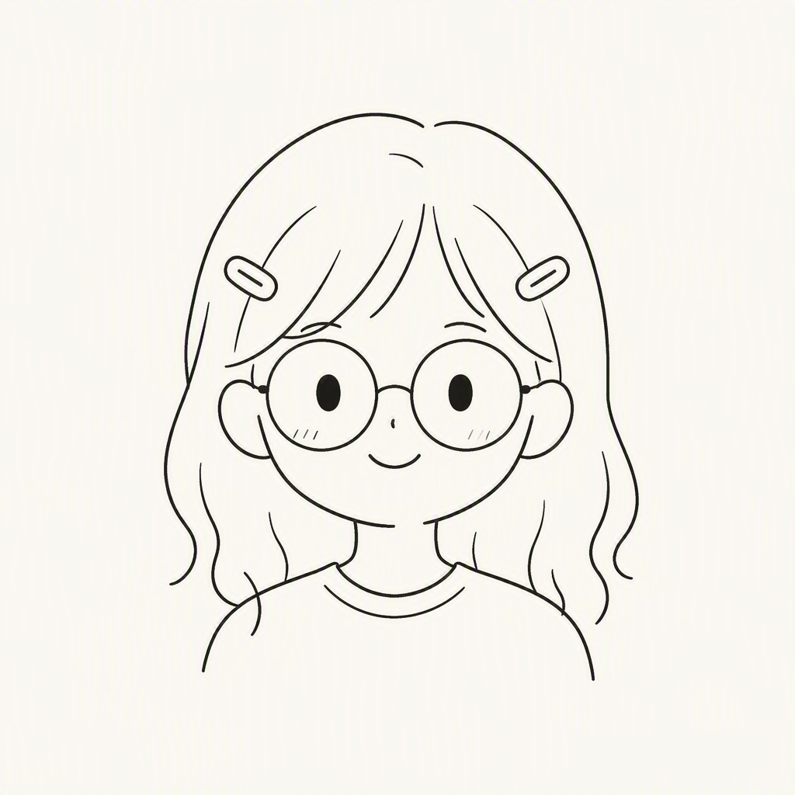

EDUCATION · 教育背景
教育背景
TJU × PolyU，深圳未来技术学院，计算机科学与技术专业在读。
Undergraduate in Computer Science & Technology at the Tianjin University × Hong Kong Polytechnic University Shenzhen Future Technology Institute.
HELLO / 你好
一名随和、活泼、爱笑的女大学生。喜欢听音乐、拍照片、追好剧，也爱和朋友一起发现好吃的。
An easy-going, cheerful student. I love music, photography, great shows, and hunting down good food with friends — while keeping my studies on track.
A LITTLE ABOUT ME
EDUCATION · 教育背景
TJU × PolyU，深圳未来技术学院，计算机科学与技术专业在读。
Undergraduate in Computer Science & Technology at the Tianjin University × Hong Kong Polytechnic University Shenzhen Future Technology Institute.
ACADEMIC INTERESTS · 学术兴趣
我对能「做出看得见的东西」的方向尤其感兴趣——从写代码到把它变成可以交互的界面。
I'm especially drawn to fields where you can build something tangible — from writing code to turning it into interactive experiences.
SKILLS · 技能
正在学习 & 日常积累的技能。
Skills I'm learning and building up day by day.
OFF THE CLOCK · 课外的我
认真学习和好好生活，我都想兼顾。I want to do well at both my studies and my life.
EXPERIENCE & ACTIVITIES
积极参加课程项目与校园活动，在小组作业中负责组织与整理，也乐于和同学一起解决难题。
Actively taking part in coursework and campus activities; organizing and coordinating in group projects, and always happy to solve problems together with classmates.
课程项目 · Coursework小组协作 · Teamwork
此处用于列出奖学金、竞赛或校级荣誉（占位，正式发布前请替换为真实信息）。
Reserved for scholarships, competitions, or school awards. Placeholder — please replace with real details before publishing.
[示例占位 · Placeholder]
可在此填写实习、社会实践或志愿服务经历（占位）。
Add internships, social practice, or volunteer experience here (placeholder).
[示例占位 · Placeholder]
加入的兴趣社团、学生会或志愿者活动，让人与人之间的连接更有温度（示例占位）。
Clubs, student unions, or volunteer groups I joined (placeholder).
[示例占位 · Placeholder]
SELECTED PROJECTS
一个「中英双语」的个人学术主页，包含自我介绍、教育背景、兴趣技能，以及一个能对话的本地数字分身。纯静态实现（HTML / CSS / JS），无需后端、不上传聊天内容。
A bilingual personal academic homepage with profile, education, interests, and a local rule-based digital twin chatbot. Pure static (HTML / CSS / JS) — no backend, and chat content never leaves the browser.
HTMLCSSJavaScript
在此补充课程设计、竞赛作品或兴趣项目，附上链接与简介（示例占位）。
Add course designs, competition works, or personal projects here along with links and a short description (placeholder).
[待补充 · To add]
MY DIGITAL TWIN
这是我的数字分身。想知道我的大学生活、最近在学什么、吃了什么好吃的，或者什么时候有空出来玩？尽管问她吧！
This is my digital twin. Curious about my campus life, what I'm studying lately, what tasty things I've found, or when I'm free to hang out? Ask her in Chinese or English.

✿ 本地对话，不上传聊天内容 · Local chat, nothing is uploaded
GET IN TOUCH
For academic exchange, coursework, or general contact.
Code from my personal projects and coursework.
✿ 邮箱和 GitHub 是我对外的联系渠道，其他社交账号暂时不公开。Email and GitHub are my main contact channels; other social accounts stay private.
LEAVE A MESSAGE
SAY HI / 说点什么
嗨，既然来了就坐一会儿吧～ 我很想知道你的真实想法。
不管是「这里可以更好」、想看的某个内容，还是单纯路过打个招呼，都可以写下来告诉我。
Suggestions, ideas, or just to say hi — write it down and I'll read every single one.
✿ 留言会保存到我的数据库，不在页面上公开。Saved privately, never shown publicly.